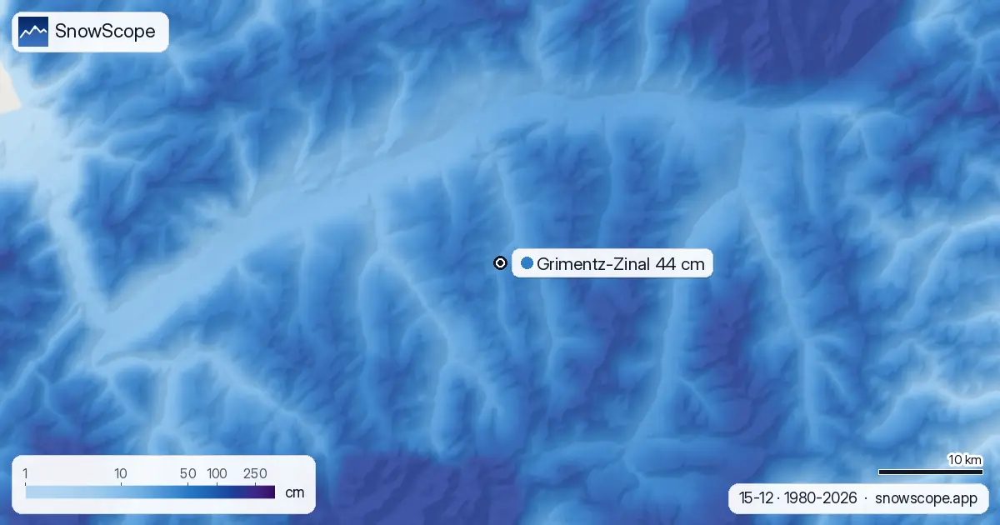
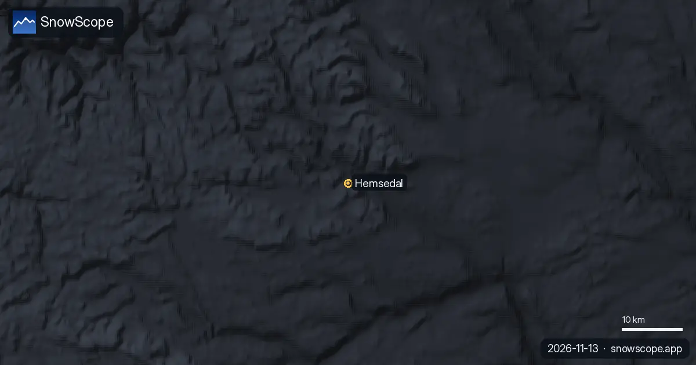
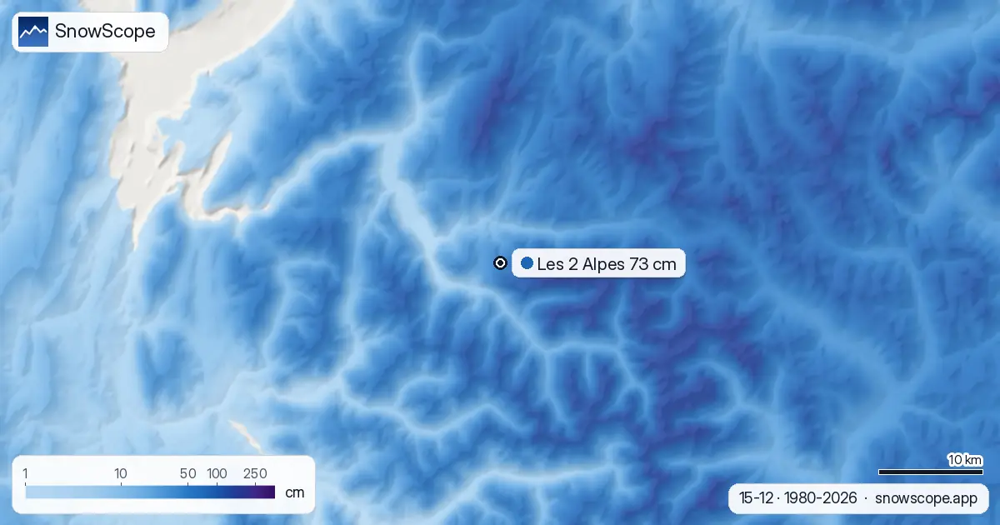
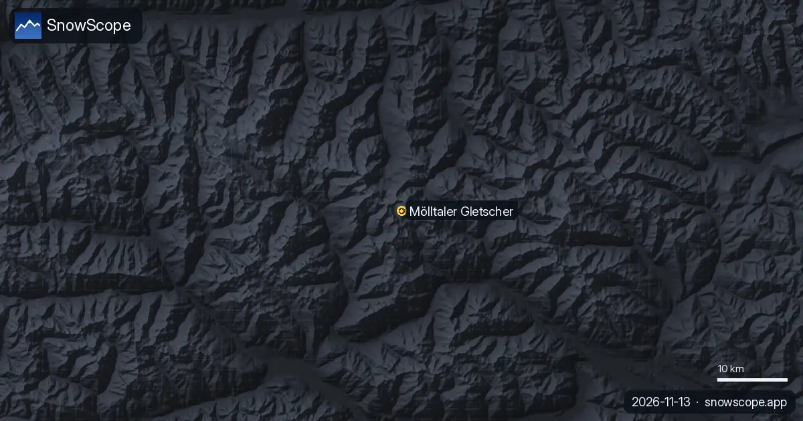
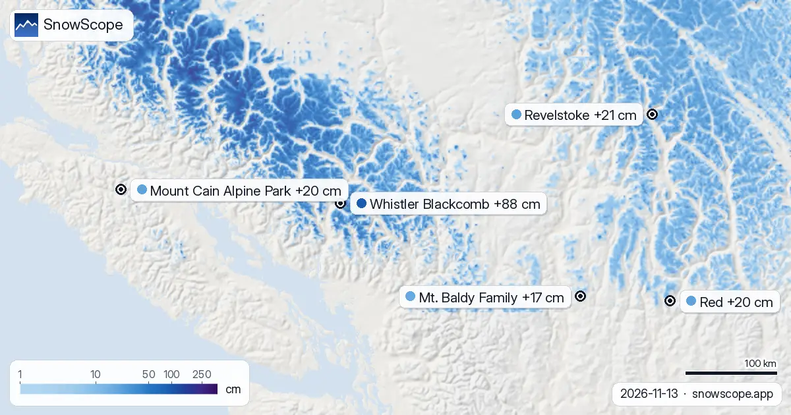
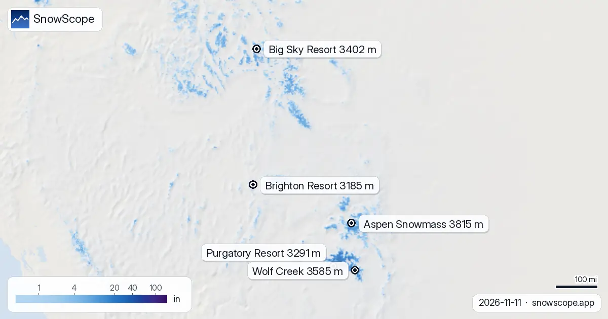
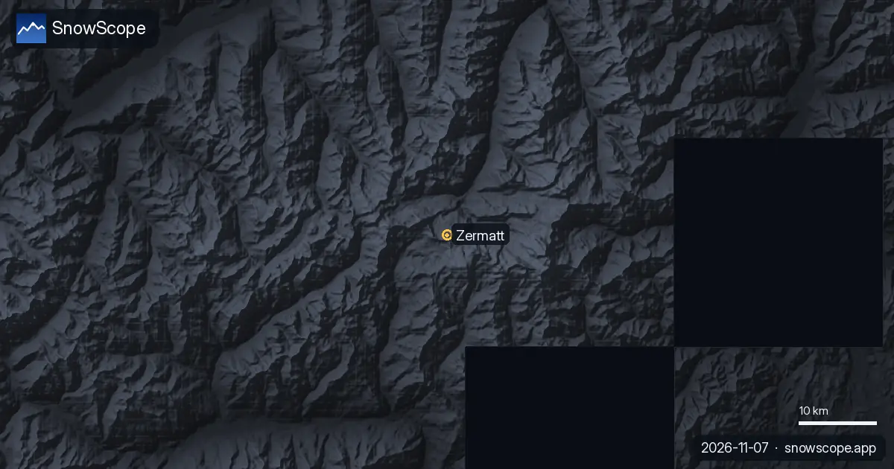
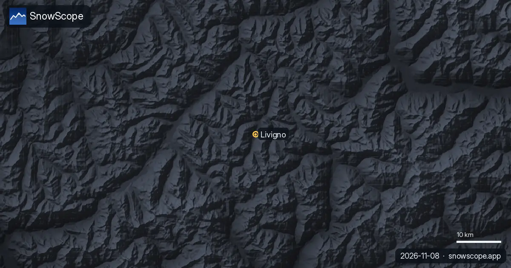

Schneeberichte · Wo Skifahren
Tägliche Schneeberichte für Skifahrer: wo der Schnee liegt, was kommt und wo du fahren kannst, aus der SnowScope-Schneekarte und Messstationen. Jede Zahl stammt aus den Daten des Tages.

Bei Monterosa Ski kostet der Tagespass online 40,00 bis 71,00 EUR. Im Dezember liegt der Schnee oben: üblich 124 cm auf 3.030 m, 6 cm auf 1.207 m.

Fellhorn/Kanzelwand im Dezember: 63 cm am Gipfel (1965 m) an einem typischen 15. Dezember, 10 cm im Tal; 6-Tage-Skipass im Advent 344,50 EUR bis 20. Dezember.

Plane deinen Dezember-Trip 2026 nach Les Orres, indem du die wöchentlichen Skipasspreise mit unserer Schneehistorie aus 46 vergangenen Wintern vergleichst.

Hemavan im Dezember: 82 cm an der Mittelstation an einem typischen 15. Dezember, jeder Winter mit 30 cm Mitte Dezember; der tiefste Dezember unserer Nordic-Auswahl.

Vergleiche Grandvalira und spanische Skigebiete im Dezember 2026 bezüglich Schneehöhen, Lift-Höhen und Preisen ab 49,00 EUR.

Pitztaler Gletscher im Dezember: 87 cm an der Mittelstation an einem typischen 15. Dezember, mehr Dezemberschnee als in den 1980ern; Tageskarte 77 EUR, 6 Tage 410 EUR.

Für eine günstige Skiwoche mit der Familie im Dezember in Astún-Candanchú solltest du Ende Dezember anpeilen, wenn die oberen Pisten in 67 % der vergangenen Winter guten Schnee haben.

Deutschland im Dezember: Zugspitze und Fellhorn-Gipfel hatten Mitte Dezember in mindestens 9 von 10 Wintern 30 cm; Sudelfeld, Brauneck und Feldberg nur selten.

Puy-Saint-Vincent bietet einen 44 EUR Erwachsenen-Tagespass und soliden Dezember-Schnee in der Höhe, hier im Vergleich zum großen Nachbarn Serre Chevalier.

Oppdal im Dezember: 60 cm an der Talstation (585 m) an einem typischen 15. Dezember, 93 % der Winter mit 30 cm Mitte Dezember – besser als Trysils Tal.

Grimentz-Zinal bietet 71 km Pisten und verlässlichen Schneesicherheit in großer Höhe für Ihre Dezember-Reise, mit 6-Tages-Pässen für CHF 339,00.

Österreich vor Weihnachten: Galtür 258 EUR und Kühtai 269 EUR für 6 Tage, mit 30 cm in über 90 % der Winter; Gletscher kosten mehr, kleine Hügel sind ein Risiko.

Planst du eine Reise nach Baqueira Beret im Dezember? Sieh dir unsere Schnee-Historie an, Ticketpreise ab 70,00 € für einen Tag und den Vergleich zu Astún-Candanchú.

Wir bewerten französische Skigebiete nach der Schneewahrscheinlichkeit im Dezember und den Skipasspreisen, beginnend bei 36,00 EUR für einen Tagespass für Erwachsene in Les Karellis.

Galtür im Dezember: 55 cm an der Mittelstation an einem typischen 15. Dezember, 93 % der Winter mit 30 cm Mitte Dezember; Tageskarte Nebensaison 55,50 EUR bis 18. Dezember.

Geilo im Dezember: 57 cm an der Mittelstation an einem typischen 15. Dezember, 96 % der Winter mit 30 cm Mitte Dezember; Tageskarte ab 590 NOK (rund 56 EUR).

Grandvalira wird oft als günstiges Skigebiet für Dezember verkauft, doch der Naturschnee an der Talstation liegt in den vergangenen Wintern im Schnitt bei nur 9 cm.

Hemsedal im Dezember: 70 cm an der Mittelstation und 106 cm am Gipfel an einem typischen 15. Dezember, aber 32 cm im Tal; Geilo nebenan ab 590 NOK pro Tag.

Hintertuxer Gletscher im Dezember: 98 cm auf 3245 m und 52 cm an der Mittelstation an einem typischen 15. Dezember; Tageskarte 82 EUR, 6 Tage 399 EUR.

Vergleiche die Schneechancen im Dezember und geprüfte Skipasspreise ab 40,00 EUR in italienischen Skigebieten für deinen Wochenendtrip mit dem Auto.

Skifahren in Kühtai im Dezember: 60 cm an der Talstation (1939 m) an einem typischen 15. Dezember, 6-Tage-Skipass in der Nebensaison 269 EUR bis 18. Dezember.

Les 2 Alpes reicht bis auf 3.511 m für viel Schnee im Dezember 2026, mit einem 6-Tage-Skipass für Erwachsene für 266,50 EUR.

Les Karellis bietet 45 km Pisten und einen 6-Tage-Skipass für Erwachsene für 191,00 EUR mit einer 98 %igen Schneewahrscheinlichkeit auf mittlerer Höhe Ende Dezember.

Levi im Dezember: 38 cm an einem typischen 15. Dezember, 91 % der Winter mit 30 cm in der Weihnachtswoche, mehr Dezemberschnee als früher; Tageskarte 60 EUR, online 57 EUR.

Fahr Ski in Livigno für 51,50 EUR pro Tag vor dem 18. Dezember, wenn der Schnee am Gipfel in 100 % der vergangenen Winter 30 cm erreicht.

Montgenèvre hat im Dezember üblicherweise 56 cm Schnee an der Talstation und bietet Wochenendfahrern damit eine bessere Schneelage als Sestriere auf der anderen Seite der Grenze.

Skifahren in Obertauern im Dezember: 43 cm an einem typischen 15. Dezember an der Mittelstation, 6-Tage-Skipass vor Weihnachten 331 EUR.

Pila oberhalb von Aosta bietet einen günstigen Tagesskipass für 60,00 EUR und zuverlässigen Schnee im Dezember auf den oberen Pisten.

Die Lifte in Saas-Fee erreichen 3.556 m, wo unsere Schnee-Historie zeigt, dass 100 % der vergangenen Winter bis Mitte Dezember mindestens 30 cm Schnee hatten.

12 nordische Skigebiete im Dezember: Hemavan, Hemsedal und Geilo hatten Mitte Dezember in 96-100 % der Winter 30 cm an der Mittelstation; Tageskarten in Finnland 58-60 EUR.

Entdecke die ruhigen Pisten von St-Luc Chandolin, wo die Schneehöhe auf mittlerer Höhe in 98 % der Winter Ende Dezember 30 cm erreicht.

Trysil im Dezember: 44 cm an der Mittelstation an einem typischen 15. Dezember, 83 % der Winter mit 30 cm Mitte Dezember; die Preise sind dynamisch, also früh buchen.

Valloire-Valmeinier bietet 131 km Pisten und eine 98 % Chance auf 30 cm Schnee auf halber Höhe bis Mitte Dezember.

Zugspitze im Dezember: 122 cm auf 2627 m an einem typischen 15. Dezember, Tageskarte online 70,50 EUR; Garmisch-Classic darunter 69 EUR mit deutlich weniger Schnee.

Mölltaler Gletscher im Dezember: 66 cm am tiefsten Lift (2103 m) und 128 cm an der Mittelstation an einem typischen 15. Dezember; 6-Tage-Skipass Nebensaison 332 EUR.

Kannst du dich als vorsichtiger Anfänger im Dezember auf Courmayeur verlassen, wenn es auf halber Höhe in unseren vergangenen Wintern im Schnitt 60 cm Schnee gibt?

Åre im Dezember: 40 cm an der Mittelstation an einem typischen 15. Dezember, 89 % der Winter mit 30 cm Mitte Dezember, aber oben ein starker Rückgang seit den 1980ern.

Die weiße Fläche auf der Karte sank von 49.467 sq mi (128.120 km²) (11. November) auf heute 49.050 sq mi (127.040 km²), und die Prognose sagt …

Von jetzt bis zum 16. November erwarten wir 5 in (12 cm) in Stowe, 4 in (11 cm) in Bolton Valley Resort und 4 in (10 cm) in Sugarbush Resort. Unsere …

Von jetzt bis zum 16. November erwarten wir 13 in (34 cm) in Bear Valley, 13 in (34 cm) in Dodge Ridge und 13 in (33 cm) in Badger Pass. Ein Wort zu …

Stratton nach Höhe, aus unserem Modell: Gipfel 4 in (10 cm) (3.881 ft / 1.183 m), Mitte 2 in (6 cm) (2.936 ft / 895 m), Tal 1 in (2 cm) (1.991 ft / …

39 in (99 cm) in den oberen Hängen: Deshalb steht Telluride oben auf unserer Liste. Schneehöhe heute, Neuschnee der letzten 72 Stunden, Prognose: …

Revelstoke Schneeprognose: bis zu 10–21 cm bis zum 16. November erwartet (Westkanada). In Whistler Blackcomb liegt die Nullgradgrenze am 13. November …

Modell plus Prognose in den Alpen ergibt heute frischer Pulverschnee. Was du anziehst, was du einpackst und wann du fährst, Skigebiet für Skigebiet. …

Dévoluy Schnee-Ausblick: auf Kurs für 24–32 cm bis zum 16. November (Alpen). Bis zum 16. November ergibt unsere Prognose 35 cm in Orcières Merlette, …

Die Schneefläche ist von 39.090 km² am 11. November auf heute 76.100 km² gewachsen, und unsere Prognose ergibt 57.910 km² am 16. November: Mehr Boden …

Die Skigebiete im Atlas halten heute keinen Schnee auf ihren Pisten. Schnee ist nur auf den höchsten Gipfeln gespeichert: etwa 40 km² Boden, bis zu …

Unsere Tipps sind La Grave, Pfelders und Les Deux Alpes: Wir haben die heutige Schneehöhe, den Neuschnee der letzten 72 Stunden und die Prognose …

Die Nullgradgrenze entscheidet, ob die Berge Schnee speichern oder Regen abgeben: In den nächsten Tagen sieht unsere Prognose sie in den Pyrenäen …

Neuschnee in La Grave: 61 cm in den letzten 72 Stunden, davon 3 cm in den letzten 24. Unser Schneemodell sieht jetzt etwa 78 cm in den oberen Hängen. …

Unsere Prognose hat die Nullgradgrenze im Nordosten der USA in den kommenden Tagen zwischen 0 ft (0 m) und 4.593 ft (1.400 m). Am Donnerstag, 12. …

Zwischen 1.380 m und 3.410 m: Dort sieht unsere Prognose die Nullgradgrenze in Westkanada in den nächsten Tagen. In den wärmsten Stunden steigt die …

Die Karten von heute blicken zwei Wochen voraus in den Pyrenäen, 13. November bis 26. November. Sie stammen aus die beiden globalen Modelle, die zwei …

Wo schneit es im Nordosten der USA zwischen dem 13. November und dem 26. November, und wie viel? Wir haben die beiden globalen Modelle, die zwei …

Vierzehn Tage Neuschnee auf einer Karte, 13. November bis 26. November, für jeden Berg in Westkanada: das erwarten die beiden globalen Modelle, die …

In Telluride ändert die Höhe alles: Unser Modell zeigt 0 in (0 cm) im Tal (8.734 ft / 2.662 m), 2 in (6 cm) an der Mittelstation (10.620 ft / …

Hier sind die neuen Karten der nächsten zwei Wochen in den Alpen, 13. November bis 26. November: der erwartete Neuschnee im Gelände, abgelesen aus …

Hier sind die neuen Karten der nächsten zwei Wochen im Atlas (Marokko), 13. November bis 26. November: der erwartete Neuschnee im Gelände, abgelesen …

Unsere Zwei-Wochen-Karten zeigen, wo im US-Westen zwischen dem 13. November und dem 26. November Neuschnee fallen sollte, nach die beiden globalen …

Whistler Blackcomb, 116 cm Schnee: die heutige Höhe in den oberen Hängen (12. November). 162 cm: So viel Schnee liegt heute in den oberen Hängen von …

Kirkwood Schnee-Ausblick: auf Kurs für 16 in bis zum 15. November (US-Westen). Bis zum 15. November ergibt unsere Prognose 23 in (58 cm) in Mt. …

Mount Cain Alpine Park, Neuschnee im regionalen Vergleich: 15 cm in 72 Stunden (12. November). Die Schneefläche schrumpfte von 281.250 km² am 10. …

Cimarron Mountain Club, 39 in Schnee: die heutige Höhe in den oberen Hängen (12. November). 42 in (106 cm): So viel Schnee liegt heute in den oberen …

Mount Cain Alpine Park: Wie viel Schnee kommt? 37 cm bis zum 15. November. Wie viel Schnee kommt in Westkanada, und wo? Bis zum 15. November ergibt …

Unser Modell teilt Piau-Engaly in drei Höhen: 2 cm am Gipfel (2.527 m), 0 cm an der Mittelstation (2.144 m), 0 cm im Tal (1.762 m). In den letzten 72 …

Schneebericht im Atlas (Marokko), 12. November. Skigebiete im Atlas heute: kein Schnee auf den Pisten. Schnee nur auf den höchsten Gipfeln: etwa …

Schneebericht in den Pyrenäen, 12. November. Mit Blick auf den 15. November bringt die Prognose 33 cm in Cauterets Cirque du Lys, 29 cm in …

Auf 1.308 m in Dent de Vaulion sind die heutigen 0 cm mehr, als dieses Datum in 34 der letzten 46 Winter brachte (üblich: 0 cm): Im Schnee ist schon …

Schneefläche: 45.820 km² am 9. November, heute 38.440 km², 46.730 km² erwartet für den 14. November. Die Karte wird weniger weiß. Glacier 3000: …

Les Deux Alpes, Schneeprognose im regionalen Vergleich: 51 cm bis zum 14. November. Die Schneefläche schrumpfte von 45.820 km² am 9. November auf …

Schneebericht in den Alpen, 11. November. Drei Zutaten, eine Auswahl: Heutige Schneehöhe, Neuschnee der letzten 72 Stunden und Prognose zeigen auf …

Jetzt ist weniger Boden weiß: 40 km² am 9. November, heute nur 20 km² und 10 km² erwartet am 14. November. Heute sind die Skipisten im Atlas aper. …

Laut unserem Schneemodell und unserer Prognose bringt der heutige Tag in den Pyrenäen dünner Schnee zum Saisonstart und milde Luft, die einen …

Schneebericht im Nordosten der USA, 11. November. Bis zum 14. November ergibt die Prognose 15 in (38 cm) in Okemo Mountain, 12 in (30 cm) in Stratton …

In den nächsten Tagen sollte die Nullgradgrenze im US-Westen laut unserer Prognose zwischen 8.333 ft (2.540 m) und 13.780 ft (4.200 m) pendeln. In …

Schneebericht im US-Westen, 11. November. Bis zum 14. November ergibt die Prognose 17 in (43 cm) in Mt. Shasta Ski Park, 15 in (39 cm) in Kirkwood …

Wo solltest du im US-Westen Ski fahren? Drei Zutaten, eine Auswahl: Heutige Schneehöhe, Neuschnee der letzten 72 Stunden und Prognose zeigen auf …

38 cm in 72 Stunden: So viel Neuschnee bekam Tweedsmuir Ski Club. Tweedsmuir Ski Club gewann in den letzten 72 Stunden 38 cm Neuschnee, 35 cm davon …

Unser Schneemodell und unsere Prognose für heute in Westkanada deuten auf frischer Pulverschnee, ein Schneesturm im Anmarsch, eisige Vormittage und …

Wir haben den Schnee am Boden, den Neuschnee der letzten 72 Stunden und das, was die Prognose dazugibt, abgewogen und Whistler Blackcomb, Tweedsmuir …

Die Nullgradgrenze im Nordosten der USA, nächste Tage: 1.936 ft (590 m) bis 6.037 ft (1.840 m). Wärmste Stunden: Schneefallgrenze etwa 984 ft (300 m) …

Wo liegt heute im US-Westen der meiste Schnee? Wenn du heute den meisten Schnee im US-Westen willst, schau nach Wolf Creek (USA): etwa 35 in (90 cm) …

Der Schnee hat sich seit dem 8. November zurückgezogen, von 676 sq mi (1.750 km²) auf heute 42 sq mi (110 km²); für den 13. November ergibt unsere …

In 24 von 46 Wintern hatten die Skigebiete auf der italienischen und südfranzösischen Seite der Alpen einen relativ stärkeren Winter als die Nordseite. Die Grafik, die großen Jahre und das Wetter dahinter.

Schnee im Dezember hängt vor allem von der Höhe ab. 46 vergangene Winter in 676 Alpen-Skigebieten zeigen, wie viel Schnee am 1., 15. und 22. Dezember zu erwarten ist, von unter 1.200 m bis über 2.400 m.

Wo liegt heute in Westkanada der meiste Schnee? Der meiste Schnee in Westkanada heute: Manning Park Resort, etwa 110 cm in den oberen Hängen …

Die Nullgradgrenze in den Pyrenäen, nächste Tage: 2.420 m bis 3.710 m. Die Schneefallgrenze, etwa 300 m tiefer, erreicht ihren Höchstwert von 3.400 m …

Ein günstiger 3-Tage-Plan am Comer See im Dezember mit echten Preisen 2026-27: Züge, Schiffe, Standseilbahn und ein Skitag in Piani di Bobbio oder Madesimo, die Ersparnis gegenüber Cortina und die Chance auf Schnee zu Weihnachten.

8 cm: So viel Schnee findet unser Modell heute höchstens im Atlas. Die Skigebiete im Atlas haben heute keinen Schnee auf den Pisten. Unser …

Bis zu 37 cm: So viel gibt unsere Prognose Piau-Engaly bis zum 13. November. Bis zum 13. November ergibt unsere Prognose 37 cm in Piau-Engaly, 21 cm …

Vail in Zahlen: übliches Maximum von etwa 64 in (162 cm) an der Mittelstation in 46 vergangenen Wintern, März am schneereichsten, dazu Gelände, Anreise, Sicherheit.

Zermatt in Zahlen: wo der Schnee hält, die sichersten Monate und die Anreise ins autofreie Dorf, aus 46 vergangenen Wintern.

Steamboat, Colorado, für Familien: was für Kleinkinder, Schulkinder, Teenager und Eltern passt, mit dem Schnee aus 46 vergangenen Wintern auf drei Höhen.

Ist Verbier etwas für Anfänger? Wann ist der Schnee am besten? Wie kommt man hin? Antworten zu den 4 Vallées und 46 vergangenen Wintern.

Wie du den ersten Tag in Park City Mountain, Utah, verbringst und wann du fährst: Unsere Schneehistorie gibt etwa 71 in (180 cm) als übliches Maximum an der Mittelstation in 46 vergangenen Wintern.

Ein Bild, 100 Gebirge in den Alpen, den Pyrenäen, im Atlas und in Nordamerika: Kanada führt mit 89 % Schneebedeckung, die Alpen erreichen 45 %, der Atlas und der Nordosten der USA sind noch aper.

Die Sellaronda ab Wolkenstein (Sëlva) in Gröden: Grödner Joch, Campolongo, Pordoi und Sellajoch der Reihe nach, mit unserer Schneehistorie von 46 vergangenen Wintern.

Mt Baker, Washington: etwa 133 in (337 cm) übliches Maximum an der Mittelstation in 46 vergangenen Wintern, ein Schneefall-Weltrekord, keine Unterkunft am Berg.

Val d'Isère und der Espace Killy für Anfänger, Fortgeschrittene und Könner, mit dem Schnee aus 46 Wintern auf drei Höhen.

Mammoth Mountain nach Saison planen: etwa 93 in (235 cm) übliches Maximum an der Mittelstation in 46 vergangenen Wintern, März am tiefsten, lange Frühjahre, schwankende Winter.

Kitzbühel ist berühmt und tief gelegen. Was 46 vergangene Winter über den Schnee auf 762 m, 1.377 m und 1.993 m sagen, was sich geändert hat und welche Wochen die sicherere Wahl sind.

Mythen über Jackson Hole im Faktencheck mit unserer Schneehistorie: etwa 80 in (204 cm) übliches Maximum an der Mittelstation in 46 vergangenen Wintern, ohne klaren Rückgang.

Zehn praktische Punkte für eine Skireise nach Livigno: Anreise, Kälte, zollfreie Geschäfte, die zwei Talseiten und die beste Schneezeit, aus 46 vergangenen Wintern unserer Schneehistorie.

Im Winter nach Telluride, Flughafen für Flughafen: Telluride Regional, Montrose, die Fahrt auf dem Highway 145 mit Colorados Traktionsgesetz und die kostenlose Gondel nach Mountain Village.

Wie ein Schneetag in Whitewater bei Nelson meist abläuft, vom frühen Blick auf die Vorhersage bis zur letzten Abfahrt, mit dem Schnee aus 46 vergangenen Wintern auf drei Höhen.

Arc 1600, 1800, 1950 und 2000 im Vergleich nach Schnee, Pisten und Anreise, mit 46 vergangenen Wintern unserer Schneehistorie auf drei Höhen von Les Arcs.

So kommst du im Winter nach Snowbird: eine Canyonstraße (SR-210), Utahs Traktionsregel, der UTA-Skibus und die Fahrt vom Flughafen Salt Lake City.

Whistler Blackcomb für jedes Können, mit unserer Schneehistorie: etwa 370 cm übliches Maximum an der Mittelstation in 46 vergangenen Wintern, März und April am tiefsten.

Von den Walsern zum Weißen Ring: die Daten, die Lech Zürs geprägt haben, danach unsere Schneehistorie damals und heute, die ersten fünfzehn von 46 vergangenen Wintern gegen die letzten fünfzehn.

Mit dem Auto nach Palisades Tahoe im Winter: Entfernungen ab Reno, Kettenpflicht R-1 bis R-3 in Kalifornien, Parken mit Reservierung, TART-Busse.

Eine praktische Packliste für Stowe, Vermont: Schichten, Gesichtsschutz, Skibrille, scharfe Kanten und Wärmepads, verknüpft mit dem Schnee aus 46 vergangenen Wintern am Mount Mansfield.

Skifahren in Lake Louise zu Saisonbeginn: warum es früh losgeht, wie der Schnee im November und Dezember in 46 vergangenen Wintern meist aussah und wie man auf dünner Unterlage fährt.

Was an La Grave stimmt, dem Freeride-Berg unter der Meije: Gelände, Sicherheit, Schnee pro Monat und Trend, aus 46 vergangenen Wintern.

Big Sky, Montana, anschaulich: 5.850 Acres unter dem Lone Peak, und Schnee, der in 46 vergangenen Wintern nahe dem Gipfel etwa fünfmal so tief war wie im Tal.

Andorra hat keinen großen Flughafen: So kommst du von Barcelona oder Toulouse nach Grandvalira, Envalira-Tunnel, CG2 und Parkplätze.

Magic Mountain in Londonderry, Vermont: ein unabhängiger Skiberg mit steilen Waldabfahrten, einem alten roten Sessellift und dünnem Naturschnee. Fünf Dinge, mit dem Schnee aus 46 vergangenen Wintern.

Fahr Revelstokes ganzen Höhenunterschied erst im Kopf: der Schnee am Gipfel, an der Bergmitte und unten im Tal in 46 vergangenen Wintern, und wann jeder Teil am besten ist.

Sieben Tage in der Silvretta Arena, einer nach dem anderen: wo der Schnee liegt, wann man nach Samnaun fährt und was 46 vergangene Winter über Ischgls Schnee auf drei Höhen sagen.

Aspen Snowmass im Vergleich: Snowmass hat etwa 75 in (190 cm) übliches Maximum an der Mittelstation in 46 vergangenen Wintern, Aspen Mountain etwa 69 in (174 cm).

Gourette und Cauterets im Vergleich: Höhen, üblicher Schnee pro Monat, die besten Wochen und die Anreise, aus 46 vergangenen Wintern.